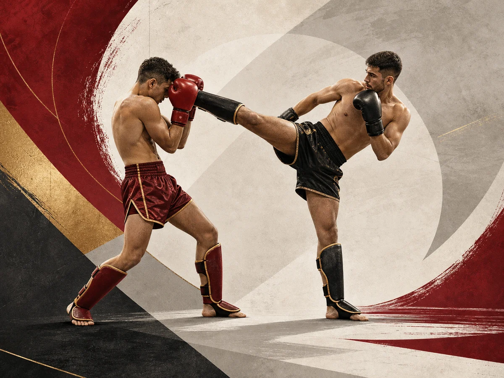

Cadre de pratique
WUKF France explique que ces disciplines utilisent des techniques de percussion avec les membres supérieurs et inférieurs, selon le règlement fédéral applicable.
Pratique représentée
La boxe pieds-poings est présentée par WUKF France comme une famille de sports de combat de percussion avec gants, pratiquée selon le style sur ring ou sur praticable.

WUKF France explique que ces disciplines utilisent des techniques de percussion avec les membres supérieurs et inférieurs, selon le règlement fédéral applicable.
Les coups de poing, coups de pied, genoux, coudes et balayages sont cités comme faisant partie de la gestuelle selon la discipline et son cadre de pratique.
WUKF France mentionne notamment Cardio Boxing, Full Boxing, Kempo Fight et Kick Boxing.